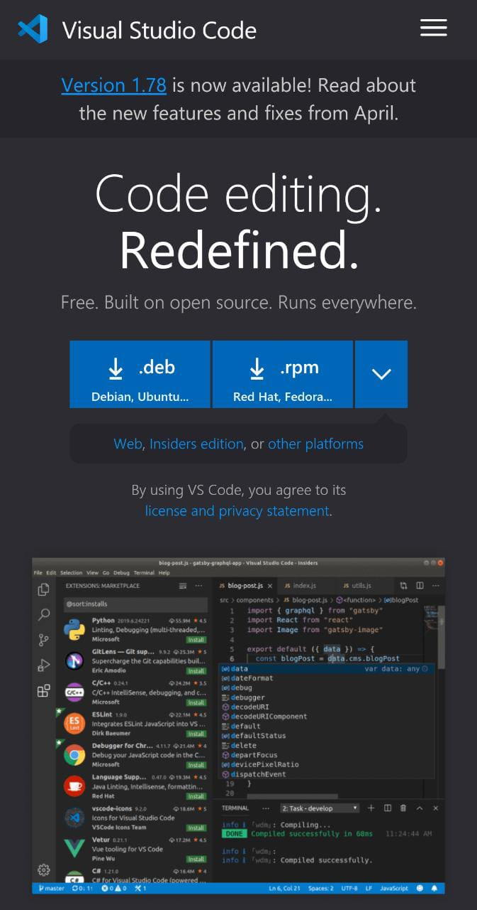

PARC: Contrast
Visual Studio Code
The Visual Studio Code page is a good example of contrast because it combines background colors and text that helps keep the page readable. Also the type of text selected goes in harmony with the contrast and other very appropriate colors are used in the other options and buttons.
Fitts's Law
eBay
The eBay page is a good example of Fitt's law because to access an article we can click both on the name link, on the image and on the entire area that it has defined. Also the options have enough spacing to avoid selecting an unwanted one by mistake.
White Space and Clean Design
JetBrains
The JetBrains page is a good example of White Space and Clean Design because it has adequate spaces, padding and margins to differentiate the different sections and divisions of the elements. This allows the page to be easy to read and to quickly understand the options available.